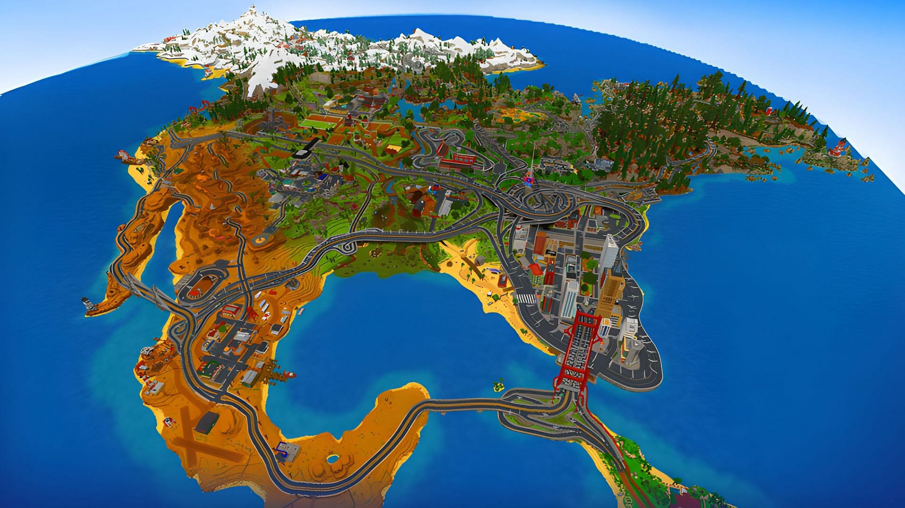

De map is 15.000 blokken elke kant uit. Het gebruiken van een (mini-)map is niet toegestaan, er zijn namelijk genoeg plekken om te ontdekken. Het gebruiken van een map kan gevolgen hebben.
Om meer informatie te krijgen kan je de Discord in de gaten houden of regelmatig op de website kijken naar nieuwe dingen.
